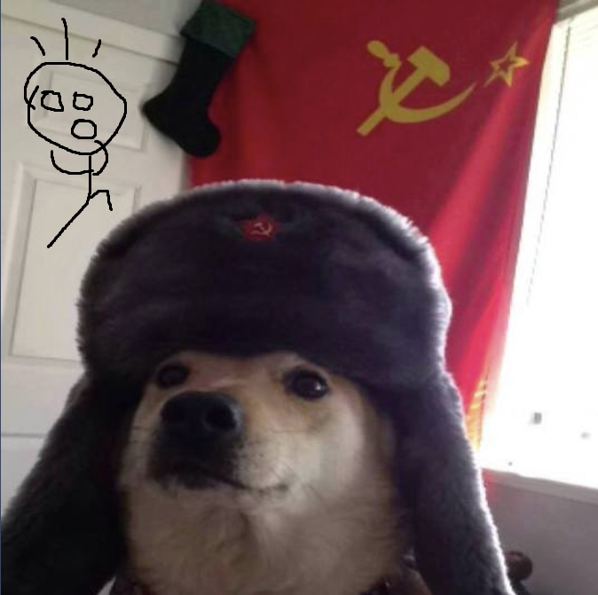

Hyperblog
Tu blog de cabecera
Este es el título atractivo e interesante del post
Y este es el parrafo de inicio donde vamos a explicar las cosas increéibles que se pueden hacer con ramas

Los blogs son la mejor forma de compartir información y tus ideas. Mucho mas que ir a conferencias o salir en Youtube. Excepto si eres un rockstar. Pero estadísticamente no lo eres.... por ahora.
Suscribete y dale like